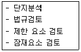
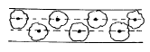
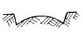
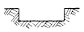
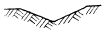
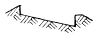
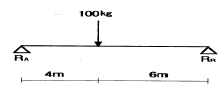
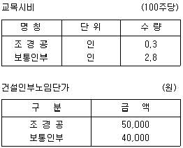

조경산업기사 (2003-05-25 기출문제)
1과목: 조경계획 및 설계
1. 계획된 기능을 충분히 발휘시키기 위한 조건에 속하는 사항 중 옳지 못한 것은?
- 세부구성이 충분히 검토되어 있을 것이어야 한다.
- 쓰기 쉬운 상태로 항상 쉽게 유지할 수 있는 계획이어야 한다.
- 재료에 대한 배려가 있어야 한다.
- 만드는 방법에 대한 배려가 있어야하고 예산에 대한 배려는 없어도 된다.
(정답률: 84%)

2. 토지이용상에 있어 접근 용이성을 크게 하기 위해서는 다음 중 어느 것이 잘 계획되어야 하는가?
- 동선계획(動線計劃)
- 배수계획(排水計劃)
- 정지계획(整地計劃)
- 가로(街路)시설물 계획
(정답률: 83%)
3. 연못의 계획과 관계되는 내용이다. 잘못된 내용은?
- 주변의 경사가 급할 때 연못은 커 보인다.
- 연못의 가장자리는 지각과 조망에 영향을 주는 공간적인 테두리 역할을 한다.
- 주변보다 높은 곳에 위치할 때 불안한 긴장감을 갖게 한다.
- 연못의 형태는 자유형이나 곡선형이 보기에 좋다.
(정답률: 64%)
4. 인문 사회적 조사 자료라 할 수 없는 것은?
- 인간의 의식구조
- 시각적 요소
- 문화유산
- 법규
(정답률: 65%)
5. 고속도로 주변 경관의 설계시 제1차적으로 고려해야 할 사항은?
- 인간척도(human scale)
- 속도척도(speed scale)
- 배수
- 성토와 절토
(정답률: 53%)
6. 조경설계기준에서는 계단이 높이 2m를 넘는 계단에는 몇m 이내마다 당해 계단의 유효폭이상의 폭으로 계단참을 두는가?
- 1m
- 2m
- 3m
- 4m
(정답률: 62%)
7. 티이 그라운드에서 230 - 250 야아드 지점에 자리잡아 골프 경기의 장애물로 설치되는 것은 다음 중 어느 것인가?
- 페어웨이 벙커
- 그린사이드 벙커
- 어프로우치
- 그린
(정답률: 73%)
8. 주차장 설계시 고려해야 할 사항과 가장 관련이 없는 것은?
- 지역의 특성
- 차량의 노후
- 도로교통의 상황
- 시설지의 수용인원
(정답률: 91%)
9. 사적지의 한옥 담장으로서 가장 적당한 것은?
- 각 파이프의 휀스
- 시멘트 벽돌 담장
- 사괴(고)석 담장
- 흙담장
(정답률: 82%)
10. 경관구성에 있어서 축(軸)이란?
- 비례감을 주는 계획선이다.
- 율동감을 주는 계획선이다.
- 설계시에 꼭 필요한 인위적인 계획선이다.
- 질서와 통일성을 주는 인위적인 계획선이다.
(정답률: 64%)
11. 수평선의 특성이 아닌 것은?
- 평온함
- 친밀감
- 장중함
- 조용함
(정답률: 56%)
12. 백제 무왕은 궁 남쪽에다 지원(池園)을 꾸몄다. 이와 관계가 먼 것은?
- 연못 주위 버드나무 식재
- 연못에 섬 축조
- 음양석 배치
- 물을 끌여들여 활용
(정답률: 75%)
13. 다음 중 공장조경의 식재계획의 원칙이 아닌 것은?
- 공장의 차폐 및 엄폐 등의 부분적인 식재를 한다.
- 공장의 성격과 입지적 특성에 따라 개성적이어야 한다.
- 자연환경은 물론 주변의 인문환경을 최대로 존중하며, 공장의 운영 관리적 측면을 배려한다.
- 관리가 쉽고, 동일한 규격과 대량공급 될 수 있는 수종을 선택한다.
(정답률: 39%)
14. 현행 법제상의 오픈스페이스(open space) 분류체계 중 도시공원에 해당하는 것은?
- 유원지
- 묘지공원
- 공공공지
- 운동장
(정답률: 69%)
15. 전이공간을 창출하는 방법이 아닌 것은 무엇인가?
- 지면의 높이 변화, 벽, 식물재료 등에 의해 전이공간을 형성시킬 수 있다.
- 건물의 처마벽 확장으로 전이공간을 형성시킬 수 있다.
- 건물의 내부와 동일한 바닥재료를 사용하여 전이공간을 형성시킬 수 있다.
- 건물의 질감을 다양하게 창출시키고, 많은 종류의 재료를 반복하여 전이공간을 형성시킬 수 있다.
(정답률: 97%)
16. 대지 면적이 400m2, 건폐율이 50%인 곳에 건폐율 전체를 1층 바닥면적으로 지어진 4층 건물이 위치하고 있다. 연상면적은 얼마인가?
- 400m2
- 800m2
- 1600m2
- 3200m2
(정답률: 60%)
17. 조경계획의 행태적 분석 기준 중 맞는 항목은？
- 기능적 측면 : 영역성
- 생리적 측면 : 안전성
- 지각적 측면 : 쾌적성
- 사회적 측면 : 복잡성
(정답률: 48%)
18. 기본계획안에 포함되는 토지이용계획에 대한 설명으로 적합한 것은？
- 토지가 지닌 본래의 잠재력이 기본적 고려사항이다.
- 토지이용의 종류는 항상 일정하다.
- 한 지역은 한 가지의 용도에만 적합하다.
- 이용행위의 기능적 특성은 토지이용과는 무관하다.
(정답률: 96%)
19. 지형의 형태 중 시각적으로 가장 단순하며, 가장 안정된 특성을 가지고 있으며, 집합적인 건물 군이나 주차장 등의 적지로써, 시선의 조망이 무한정 펼쳐지고, 추상적이고 기하학적인 선 등의 모듈 배치가 용이한 형태는?
- 능선
- 볼록한 지형
- 오목한 지형
- 평지
(정답률: 85%)
20. 계획 설계과정 중 다음은 어느 단계인가?

- 용역발주
- 조사
- 분석
- 종합
(정답률: 73%)
2과목: 조경식재
21. 동백나무의 이식 적기는?
- 4월상 - 중순
- 5월 - 6월
- 9월상 - 중순
- 2월 - 3월
(정답률: 29%)
22. 수목의 수간(樹幹) 굵기는 흉고직경을 재서 표시하는데 보통 지면으로 부터 어느 정도의 높이를 재는가?
- 0.5m
- 1.2m
- 1.0m
- 2.0m
(정답률: 80%)
23. 건축물의 전정(前庭)의 식재디자인을 위한 일반적인 설계 원칙이 아닌 것은?
- 건축물의 인공적인 건축선 완화
- 폐쇄 잔디공간 확보
- 건물의 틀짜기
- 현관으로서의 전망 강조
(정답률: 50%)
24. 공장 조경의 식재 수종을 선택할 때 가장 고려할 점은?
- 향토 수종의 선택
- 변화감을 주는 수종의 선택.
- 녹음이 많아지는 수종의 선택.
- 나쁜 환경에 견딜 수 있는 수종의 선택.
(정답률: 92%)
25. 다음의 식재 중에서 강조식재가 되지 않는 것은 어떤 것인가?
- 같은 크기의 관목이 식재된 가운데 좀 큰 키의 침엽수가 식재되어 있다.
- 단풍이 연속적으로 심겨진가운데 홍단풍이 식재되어 있다.
- 고운 질감의 식물로 식재되어 있는 가운데 거친 질감의 식물이 있다
- 같은 수관형태의 수목들이 식재되어 있다.
(정답률: 92%)
26. 인터체인지의 식재율은 일반적으로 어느 정도가 가장 알맞은가?
- 3%
- 8%
- 15%
- 30%
(정답률: 63%)
27. 나무를 심는데 있어 다음 설명 중 옳은 것은?
- 날씨가 흐리고 바람이 없는 날의 저녁이나 아침에 심는다.
- 식재구덩이(식혈)는 뿌리분의 크기 정도로 판다.
- 물조임을 하고 나면 물이 완전히 스며들기 전에 나머지 흙을 채운다.
- 심는 깊이는 원래 심어졌던 깊이보다 더 깊게 심는다.
(정답률: 75%)
28. 고속도로변에 식재된 조경수목의 활력이 점차 저하된다고 할 때 그 이유로 예상 할 수 있는 것을 열거한 것 중 옳지 않은 것은?
- 배수불량
- 배기가스에 의한 영향
- 양분의 결핍
- 과다한 광합성 작용
(정답률: 84%)
29. 수관의 질감(texture)이 거친 느낌을 주고 서양식 건물에 어울리는 나무는?
- 철쭉
- 팔손이나무
- 회양목
- 꽝꽝나무
(정답률: 64%)
30. 다음 그림과 같은 식재 방법은?

- 교호식재
- 준교호식재
- 이열식재
- 산점상식재
(정답률: 83%)
31. 식물군락을 성립시키는 외적인 환경요인이 아닌 것은?
- 토양 요인
- 기후 요인
- 생물적 요인
- 문화적 요인
(정답률: 79%)
32. 가로막기 식재에 있어 산울타리로 부지경계 식재를 하고자 한다. 이 경우 산울타리 두께는 몇 ㎝가 알맞는가?
- 10 - 20㎝
- 20 - 30㎝
- 30 - 60㎝
- 60 - 80㎝
(정답률: 43%)
33. 다음 방화식재용 수종으로 알맞지 않은 수목은?
- 잎이 넓고 밀생하며 수관부의 공극이 적은 수목
- 상록수로서 수관의 중심이 추녀보다 낮은 위치에 있게 되는 수목
- 높은 WD지수를 나타내는 잎을 가진 수목
- 일정한 지하고를 나타내고 답압에 강하며 악취가 나지않는 수목
(정답률: 73%)
34. 근원직경이 10cm인 수목을 4배 접시분으로 분뜨기를 할경우 분의 깊이를 얼마로 하여야 하나?
- 10cm
- 20cm
- 30cm
- 40cm
(정답률: 50%)
35. 다음의 지피식물의 종류 중에서 내수면(수심 0.3-2m)에서 생육이 가능한 식물은?
- 부들, 물옥잠, 매화마름
- 꽃창포, 물억새, 붓꽃
- 돌나물, 기린초, 바위채송화
- 산국, 감국, 구절초
(정답률: 44%)
36. 뿌리 혹 박테리아의 도움을 얻어 공중질소(空中窒素)를 이용하면서 살아가는 수종은?
- 팔손이나무
- 해송
- 보리수나무
- 미선나무
(정답률: 58%)
37. 다음 식물들 중 학명에 품종이 표기되지 않는 것은?
- 반송
- 불두화
- 용버들
- 화살나무
(정답률: 42%)
38. 수피(樹皮)색이 백색(白色)으로 아름다운 나무는?
- Berberis koreana
- Betula platyphylla var. japonica
- Zelkova serrata
- Diospyros kaki
(정답률: 81%)
39. 수목 규격 표시 중 H × B로 표기하는 식물은?
- 대추나무
- 낙우송
- 가중나무
- 느티나무
(정답률: 35%)
40. 다음 중 단풍의 색깔이 붉은 색이 아닌 것은?
- 감나무, 복자기나무
- 붉나무, 마가목
- 화살나무, 담쟁이덩굴
- 고로쇠나무, 백합나무
(정답률: 64%)
3과목: 조경시공
41. 담장 붕괴를 발생 시키는 기초부 부동침하(不同沈下)의 주요 원인에 속하지 않는 것은 어느 것인가?
- 이질지층(異質地層)
- 연약지반(軟弱地盤)
- 지하수위 변경(地下水位變更)
- 과하중(過荷重)
(정답률: 56%)
42. 조경공사의 공정계획을 수립할 때 가장 큰 영향을 끼치는 변수 요인은?
- 기계장비의 조달
- 식물재료의 조달
- 기상조건
- 노무인력
(정답률: 67%)
43. 도로의 곡선장(曲線長)이 너무 짧아서 생기는 결함이 아닌 것은?
- 운전자가 핸들조작에 불편을 느낀다.
- 원심가속도(遠心加速度)의 증가율이 커진다.
- 원곡선반경이 실제보다 커 보인다.
- 도로가 절곡되어 있는 것 같이 보인다.
(정답률: 67%)
44. 화학물질에 견디는 힘이 강해서 하수도공사나 바닷속의 공사에 쓰이는 시멘트는?
- 조강포오틀랜드 시멘트
- 보통 포오틀랜드 시멘트
- 중용열 포오틀랜드 시멘트
- 고로시멘트
(정답률: 48%)
45. 콘크리트 타설작업시 발생하는 블리딩(Bleeding)현상이란 다음 중 어느 것을 말하는가?
- 시멘트 입자의 비율이 높아 점성이 증가하므로 타설작업에 지장을 초래하는 현상
- 굳지 않는 상태에서 시멘트 입자의 점성에 의한 재료 분리에 저항하는 성질
- 시멘트의 화학적 작용을 인한 골재의 혼합 및 타설작업에 지장을 초래하는 현상
- 굳지 않은 상태에서 골재 및 시멘트입자의 침강(沈降)으로 물과 가벼운 입자가 분리하여 상승 하는 현상
(정답률: 83%)
46. 옹벽단면의 경제성이 높으며, 높이 6m이상의 상당히 높은 흙막이 벽에 쓰이는 옹벽은?
- 중력식옹벽
- 캔틸래버(Cantilever) 옹벽
- 부축벽옹벽
- 무근콘크리트 옹벽
(정답률: 72%)
47. 식재용 객토를 리어카로 운반하려 한다. 운반거리는 150m이며 6%의 경사로이다. 계산상의 운반거리는 얼마인가?(단, 6%경사시 환산계수(α )는 1.43이다.)
- 156m
- 157.43m
- 214.5m
- 151.43m
(정답률: 69%)
48. 지역이 광대하여 우수를 한 곳으로 모으기가 곤란할 때 배수지역을 분산시켜 처리하는 배수계통은?
- 방사식
- 차집식
- 선형식
- 직각식
(정답률: 71%)
49. 우리나라의 잔디 규격은 30cm × 30cm× 3cm이다. 이 뗏장을 가지고 10m2의 면적을 평떼로 입히고자 한다. 소요되는 뗏장은 몇 매인가?
- 약 11매
- 약 90매
- 약 110매
- 약 900매
(정답률: 53%)
50. 도로의 단면을 나타낸 그림 중 편구배를 나타낸 것은?




(정답률: 77%)
51. 도로와 하수도의 직선적인 구조물의 위치를 평면적으로 표시하는데 가장 합당한 방법은 어느 것인가?
- 좌표에 의한 방법
- 단면에 의한 방법
- 입면에 의한 방법
- 측점에 의한 방법
(정답률: 34%)
52. 공정 계획에서 소요 작업 일수를 산출하기 위한 식은?
- 소요작업일수=공사량/1일평균시공량
- 소요작업일수=단위작업공사량/총공사량
- 소요작업일수=총공사량/월평균작업량
- 소요작업일수=총공사량/작업가능일수
(정답률: 56%)
53. 점 A에 작용하는 반력은 얼마인가?

- 20㎏
- 40㎏
- 60㎏
- 80㎏
(정답률: 59%)
54. 다음 중 토양개량제에 해당하지 않는 것은?
- 부식토(humus)
- 피트모스(peat moss)
- 펄라이트(perlite)
- 코이어 메쉬(coir mesh)
(정답률: 45%)
55. 돌쌓기나 벽돌쌓기의 하루 작업 높이의 한계를 어느정도로 하는 것이 가장 좋은가?
- 1.2m 이하
- 2.0m 이하
- 2.5m 이하
- 3.0m 이하
(정답률: 81%)
56. 어느 목재의 건조 전의 중량은 100g 이고, 건조 시킨 후는 20g이 감소한다. 이 목재의 함수율은?
- 4%
- 20%
- 25%
- 80%
(정답률: 53%)
57. 일위대가표를 작성할 때 일위대가표의 계 금액의 단위표준은 어떻게 적용시키는가?
- 0.1원까지는 쓰고 그 이하는 버린다.
- 1원까지는 쓰고 그 미만은 버린다.
- 0.1원까지는 쓰고 소수위 2위에서 사사오입한다.
- 1원까지 쓰고 소수위 1위에서 사사오입한다.
(정답률: 64%)
58. 다음 종목의 단위수량의 단위 표준 중 옳지 않은 것은?
- 공사 연장 : m
- 직공인부 : 인
- 떼 : 매
- 벽돌 : 개
(정답률: 48%)
59. 재료의 일반적인 추정 단위 중량 중 옳지 못한 것은? 단 모두 자연상태임
- 암석 : 2300 - 3200 kg/m3
- 자갈 : 1600 - 1900 kg.m3
- 모래 : 1500 - 2000 kg/m3
- 미송 : 1800 - 2400 kg/m3
(정답률: 71%)
60. 네트워크 공정표 작성에 대한 설명 중 잘못된 내용은?
- 작업(activity)은 화살표로 표시하고 화살표의 시작과 끝에는 동그라미를 표시한다.
- 빵표는 결합점(Event, node)이라 한다.
- 동일 네트워크에 있어서 동일 번호가 2개 이상 있어서는 안된다.
- 화살표의 윗부분에 소요시간을, 밑부분에 작업명을 표기한다.
(정답률: 72%)
4과목: 조경관리
61. 다음 중 뿌리의 단근작업에 대한 설명 중 옳지 않은 것은?
- 뿌리의 노화현상을 방지한다.
- 수목의 도장을 억제한다.
- 수관내부의 잔가지가 말라 죽지 않는다.
- 아랫가지 발육을 좋게 한다.
(정답률: 47%)
62. 두 가지 이상의 비료성분을 혼합하여 만든 배합비료의 장단점이라고 할 수 없는 것은?
- 비료 효과의 완급을 조절한다.
- 시비의 횟수가 상대적으로 준다.
- 비료 효과의 상승효과를 높인다.
- 각 비료성분의 결점을 보완한다.
(정답률: 30%)
63. 잔디밭의 통기작업(通氣作業)이라 볼 수 없는 것은?
- 레이킹(raking)
- 톱 드레싱(top dressing)
- 코링(coring)
- 스파이킹(spiking)
(정답률: 62%)
64. 암발아 광조건에 따른 잡초에 해당하지 않은 것은?
- 냉이
- 광대나물
- 별꽃
- 서양민들레
(정답률: 62%)
65. 동결심도 하부까지 모래질이나 자갈모래로 환토해야 하는 토사포장도로의 보수 공법은?
- 노면 치환공법
- 지반 치환공법
- 배수처리공법
- 요철정리공법
(정답률: 67%)
66. 뗏밥주기에 대한 설명 중 적당하지 않은 것은?
- 뗏밥은 보통 모래 2 : 토양 1 : 유기물을 혼합하여 약 5㎜의 체를 통과한 것만 사용한다.
- 금잔디,들잔디 등 난지형 잔디들은 잔디 생육이 왕성할 때 행한다.
- 뗏밥은 일시에 다량 시용하면 황화현상이나 병해를 유발하므로 소량을 자주 시용한다.
- 뗏밥을 준 후에는 곧 물을 뿌려주어 잔디 표면에 말라붙기 전에 잔디 사이로 스며들게 한다.
(정답률: 50%)
67. 교목 500주가 심겨진 공원에 시비를 하고자 한다. 년평균 수목 시비율을 20%로 할 때 다음 표를 참조하여 시비를 위한 인건비를 산출하면 얼마인가?

- 127,000원
- 279,000원
- 635,000원
- 1,270,000원
(정답률: 59%)
68. 목재가 가장 잘 부패하는 조건들을 나열한 것이다. 틀린것은?
- 온도 20 - 40oC
- 습도 90% 이상
- 목재 함수율 20% 이상
- 지하수위 이하에 박힌 기초 말뚝
(정답률: 30%)
69. 식생에 의한 비탈면 유지관리의 내용으로 가장 적합치 않은 것은?
- 시공 후 1개월간 중점관리
- 연 1회 이상 시비 및 추비시여
- 잡초제거 및 풀베기
- 관수 및 병해충 방제
(정답률: 38%)
70. 조경 녹지 시설의 유지관리 계획을 입안하고자 할 때 필요한 사항이다. 거리가 가장 먼 것은?
- 준공사진 및 하자 이행 조서
- 관리지표의 파악
- 현황조사 및 분석
- 잠재 예측과 사회 변화에의 대응 방안 검토
(정답률: 44%)
71. 전문적인 관리능력을 가진 전문업체에 위탁하는 도급관리 방식의 대상에 해당되는 것은?
- 연속해서 행할 수 없는 업무
- 금액이 적고 간편한 업무
- 진척상황이 명확치 않고 검사하기가 어려운 업무
- 장기간에 걸쳐 단순작업을 행하는 업무
(정답률: 50%)
72. 다음 중 목재 방균제로 쓰이는 약품으로 가장 관련이 없는 것은?
- 크롤나프탈렌
- 크레오소트유
- 타르
- C.C.A
(정답률: 30%)
73. 콘크리트나 모르타르에 미관을 위한 재도장은 얼마의 기간을 두고 하는 것이 적당한가?
- 1년
- 3년
- 5년
- 8년
(정답률: 58%)
74. 다음은 공해가 심한 지역에서 그 피해를 감소시키는 방법에 대한 설명이다. 이 중 적당하지 않은 것은?
- 석회질 비료를 준다.
- 침엽수와 활엽수를 혼식한다.
- 맹아력이 큰 수종을 선택한다.
- 생장이 빠르면 피해가 심해지므로 비료의 시용을 억제한다.
(정답률: 82%)
75. 다음 중 잎과 줄기에 담황갈색의 반점이 마치 동전처럼 무수히 나타나 줄기와 잎이 고사하는 잔디의 병명은?
- 붉은 녹병
- 달라스폿(doller spot)
- 황화현상
- 브라운 팻치(Brown patch)
(정답률: 50%)
76. 옹벽이 앞으로 넘어질 우려가 있을 때 옹벽 뒷면의 지하수를 배수구멍에 유도시키고 토압을 경감시키는 공법은?
- 그라우팅 공법
- P.C 앵커 공법
- 부벽식 콘크리트 옹벽공법
- 말뚝에 의한 압성토공법
(정답률: 50%)
77. 잔디깎기 작업에 관한 설명 중 틀린 것은?
- 잔디의 포기갈라짐을 촉진시켜 잔디밭의 밀도를 높일 수 있다.
- 깎은 뒤에 거름을 주면 잔디에 좋지 않다.
- 잔디의 깎기작업은 기후, 잔디의 종류, 생육상태, 잔디의 관리상태에 따라 깎는 횟수를 달리하여야 한다.
- 정기적으로 되풀이 하면 잡초의 발생을 막을 수 있다.
(정답률: 65%)
78. 바이러스(Virus)에 의해서 발생되는 병해는?
- 탄저병
- 오동나무 미친개꼬리병
- 세균성 천공병
- 근두암종병
(정답률: 53%)
79. 다음 화단관리를 위한 화초 심는 요령 중 바르지 못한 것은?
- 봄에는 같은 계통의 색채를 가진 화초를 재식한다.
- 화단에는 밑거름을 주고 화초에 엽면시비를 하여 준다.
- 화단이 넓으면 여러가지 색채로 많은 종류의 초화류를 배식한다.
- 가을 화단은 청명한 색깔로 배식한다.
(정답률: 44%)
80. 관리계획 수립시 조경시설물의 보수 횟수 및 시기결정의 기준이 되는 시설조건에 해당되지 않는 것은?
- 시설 수량
- 시설 규모
- 시설 재질
- 시설 규격
(정답률: 62%)